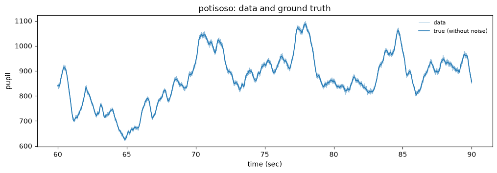
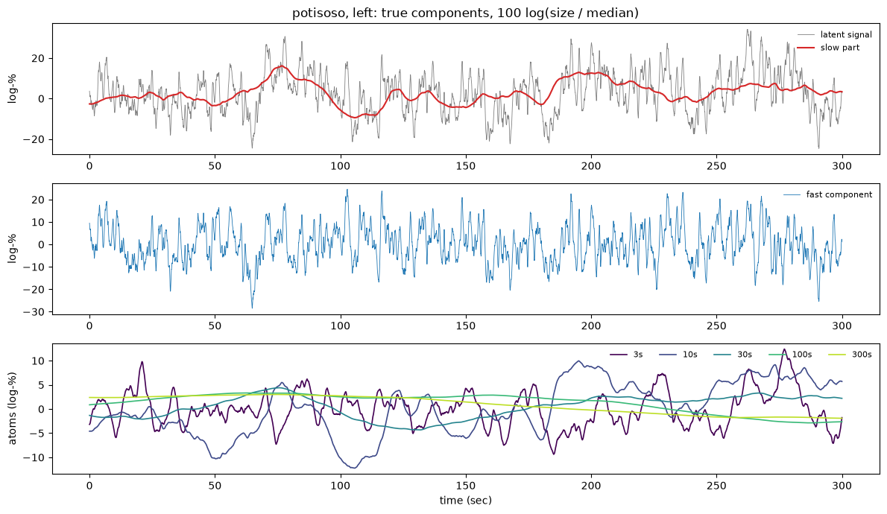
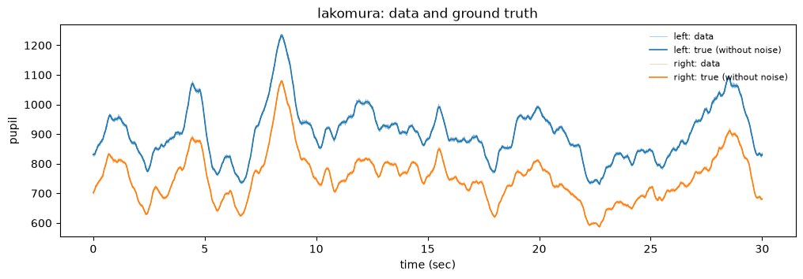
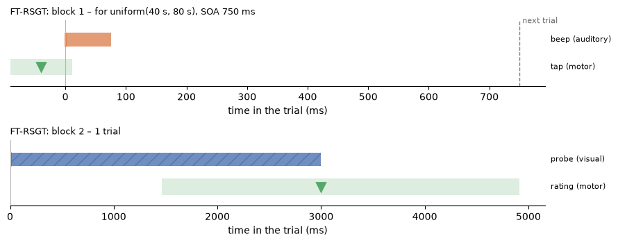
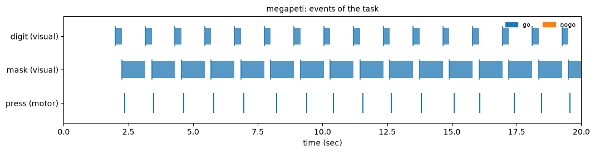
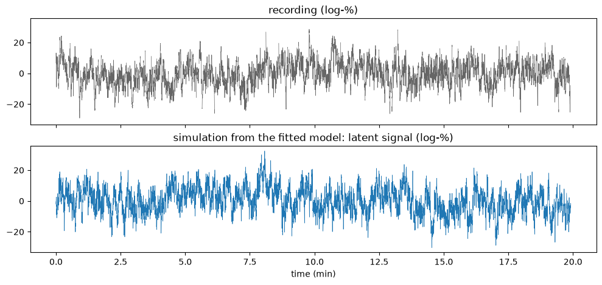
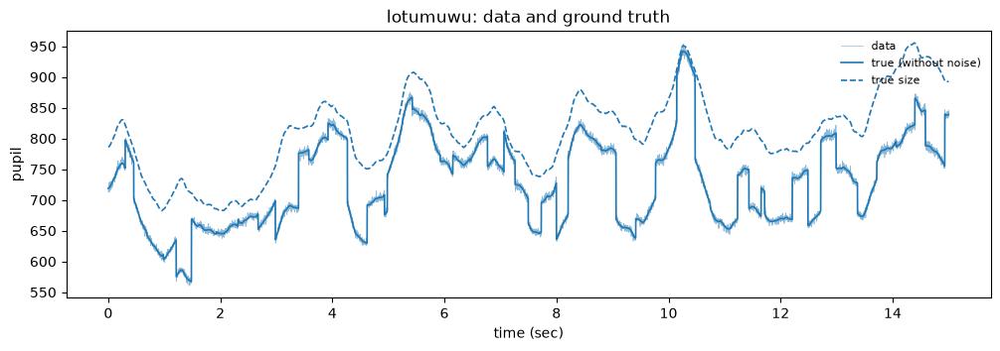
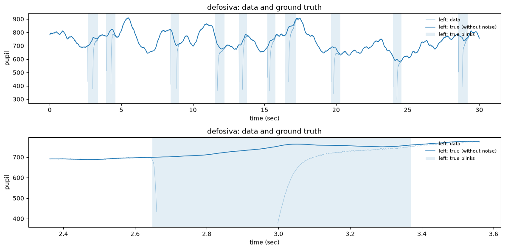

Simulated data#
Simulated recordings come with their ground truth, so methods can be checked against it. This notebook shows how to build simulations from steps, what the ground truth contains, and how to simulate new recordings from a fitted timescale model. The concepts are explained in the user guide.
Experimental: the latent pupil size comes from the timescale model, which is experimental; the API of the simulations may still change.
[1]:
import numpy as np
import pandas as pd
import matplotlib.pyplot as plt
import pypillometry as pp
pp.logging_set_level("WARNING")
A first simulation#
A Simulation is a recipe: the duration, sampling rate, eyes and seed of the recording, and a chain of steps. Here: the latent pupil size from the timescale model with typical parameters (the centre of the general prior), the units of the tracker (a median pupil size of 800) and white noise of 0.5 log-%:
[2]:
sim = (pp.sim.Simulation("5 min", fs=500, seed=1)
.pupil()
.units(median=800)
.noise(0.5))
sim
[2]:
Simulation(300 s at 500 Hz, eyes=['left'], seed=1)
.TimescalePupil()
.Units(median=800)
.WhiteNoise(sd=0.5)
Nothing is simulated yet. run() makes the data, a SimEyeData object. It is an EyeData object (all methods and plots work), with the ground truth in d.truth and the recipe in d.simulation:
[3]:
d = sim.run()
d
[3]:
SimEyeData — potisoso SIMULATED
Signal overview
![left_pupil sparkline]()
Simulation and ground truth
Simulation(300 s at 500 Hz, eyes=['left'], seed=1) .TimescalePupil() .Units(median=800) .WhiteNoise(sd=0.5)
Data glimpse
EyeDataDict(vars=1,n=150000,shape=(150000,)): left_pupil (float64): 832.2373, 820.7911, 834.2614, 830.7793, 826.707...
d.plot.plot_truth() shows the data with the true pupil (without the noise):
[4]:
plt.figure(figsize=(12, 3.5))
d.plot.plot_truth(plot_range=(60, 90));

The ground truth#
d.truth holds the true time series, one value per sample: the pupil without noise (pupil), the true size (size; the same here, it differs with foreshortening), and the components of the latent signal in log-% (log_size is their sum; log_slow collects the atoms with time scales of at least 10 s):
[5]:
d.truth.variables
[5]:
['log_size',
'log_fast',
'log_3s',
'log_10s',
'log_30s',
'log_100s',
'log_300s',
'log_slow',
'size',
'pupil']
[6]:
d.plot.plot_components(figsize=(12, 7));

The ground truth follows the samples: after cropping or downsampling, it still matches the data.
[7]:
dd = d.downsample(50, inplace=False).crop(60, 90, units="sec", inplace=False)
len(dd), len(dd.truth["left", "pupil"])
[7]:
(1500, 1500)
Both eyes#
With two eyes, binocular=True gives both eyes the same fast component and atoms (with a gain between them) and adds a difference between the eyes (diff_sd, diff_ell). Parameters that are not given keep their typical values. The median can be set per eye:
[8]:
d2 = (pp.sim.Simulation("2 min", fs=500, eyes=["left", "right"], seed=2)
.pupil(binocular=True, params={"diff_sd": 3.0, "gain": 1.1})
.units(median={"left": 900, "right": 750})
.noise(0.3)
.run())
plt.figure(figsize=(12, 3.5))
d2.plot.plot_truth(plot_range=(0, 30));

Varying a recipe#
Each method of a simulation returns a new simulation, so one base recipe can be varied. Each step draws from its own random stream, so the variants share everything except what was changed: here, the same latent pupil with different amounts of noise.
[9]:
base = pp.sim.Simulation("5 min", fs=500, seed=3).pupil().units(800)
noisy = {sd: base.noise(sd).run() for sd in (0.2, 1.0, 3.0)}
np.array_equal(noisy[0.2].truth["left", "pupil"], noisy[3.0].truth["left", "pupil"])
[9]:
True
Checking a method against the truth#
With the truth at hand, the error of a method is one line. For example, how well does a low-pass filter recover the true pupil at each noise level, for several cutoff frequencies?
[10]:
def rmse(d, filtered):
true = d.truth["left", "pupil"]
return np.sqrt(np.mean((np.asarray(filtered["left_pupil"]) - true) ** 2))
errors = pd.DataFrame({
f"noise {sd} log-%": {f"{cutoff} Hz": rmse(dn, dn.pupil.lowpass_filter(cutoff, inplace=False))
for cutoff in (1, 4, 10, 30)}
for sd, dn in noisy.items()})
errors.round(2)
[10]:
| noise 0.2 log-% | noise 1.0 log-% | noise 3.0 log-% | |
|---|---|---|---|
| 1 Hz | 8.55 | 8.57 | 8.69 |
| 4 Hz | 1.23 | 1.55 | 3.10 |
| 10 Hz | 0.43 | 1.50 | 4.42 |
| 30 Hz | 0.51 | 2.54 | 7.63 |
Tasks and events#
A Task describes the design of an experiment and makes the events of the recording. It is built by chaining as well: block() starts a block of trials, stimulus() and response() add events to each trial, rest() adds a pause and repeat() repeats the blocks. Times are fixed or distributions, given as strings. Here, the sustained attention to response task (SART): a digit every 1150 ms, masked after 250 ms; press for every digit except 3. In a notebook, a task shows a
schematic of its trials:
[11]:
sart = (pp.sim.Task("SART")
.block(n=225, soa="1150 ms", conditions={"go": 8/9, "nogo": 1/9})
.stimulus("digit", "visual", duration="250 ms",
meta={"digit": {"go": [1, 2, 4, 5, 6, 7, 8, 9], "nogo": [3]}})
.stimulus("mask", "visual", at="250 ms", duration="900 ms")
.response("press", after="digit", rt="lognormal(350 ms, 70 ms)",
p={"go": 0.97, "nogo": 0.3}))
sart
[11]:
Task — SART
The same task (and the PVT, the FT-RSGT and the n-back task) is available ready-made in pp.sim.tasks, with arguments for its parameters. The FT-RSGT has two blocks, tapping with a beep and a thought probe, repeated for 20 minutes; task.plot() draws the schematic with matplotlib:
[12]:
pp.sim.tasks.ftrsgt().plot();

Added to a simulation, the task makes the events of the data. Without a duration, the recording lasts until the end of the task. The events carry their metadata (trial, condition, reaction time, the digit, …), so they can be used like those of a real recording; for now, they do not change the pupil.
[13]:
ds = (pp.sim.Simulation(fs=500, seed=6)
.task(pp.sim.tasks.sart(n=60), start="2 s")
.pupil().units(800).noise(0.5)
.run())
ds.events
[13]:
| Onset (ms) | Label | kind | modality | trial | block | condition | duration | luminance | rt | digit | |
|---|---|---|---|---|---|---|---|---|---|---|---|
| 0 | 2000.000000 | digit | stimulus | visual | 0 | 1 | go | 250.0 | NaN | NaN | 6.0 |
| 1 | 2250.000000 | mask | stimulus | visual | 0 | 1 | go | 900.0 | NaN | NaN | NaN |
| 2 | 2346.488905 | press | response | motor | 0 | 1 | go | NaN | NaN | 346.488905 | NaN |
| 3 | 3150.000000 | digit | stimulus | visual | 1 | 1 | go | 250.0 | NaN | NaN | 2.0 |
| 4 | 3400.000000 | mask | stimulus | visual | 1 | 1 | go | 900.0 | NaN | NaN | NaN |
| 5 | 3472.199112 | press | response | motor | 1 | 1 | go | NaN | NaN | 322.199112 | NaN |
| 6 | 4300.000000 | digit | stimulus | visual | 2 | 1 | go | 250.0 | NaN | NaN | 6.0 |
| 7 | 4550.000000 | mask | stimulus | visual | 2 | 1 | go | 900.0 | NaN | NaN | NaN |
| 8 | 4645.804215 | press | response | motor | 2 | 1 | go | NaN | NaN | 345.804215 | NaN |
| 9 | 5450.000000 | digit | stimulus | visual | 3 | 1 | go | 250.0 | NaN | NaN | 7.0 |
| 10 | 5700.000000 | mask | stimulus | visual | 3 | 1 | go | 900.0 | NaN | NaN | NaN |
| 11 | 5805.652903 | press | response | motor | 3 | 1 | go | NaN | NaN | 355.652903 | NaN |
| 12 | 6600.000000 | digit | stimulus | visual | 4 | 1 | go | 250.0 | NaN | NaN | 8.0 |
| 13 | 6850.000000 | mask | stimulus | visual | 4 | 1 | go | 900.0 | NaN | NaN | NaN |
| 14 | 6957.777856 | press | response | motor | 4 | 1 | go | NaN | NaN | 357.777856 | NaN |
| 15 | 7750.000000 | digit | stimulus | visual | 5 | 1 | go | 250.0 | NaN | NaN | 9.0 |
| 16 | 8000.000000 | mask | stimulus | visual | 5 | 1 | go | 900.0 | NaN | NaN | NaN |
| 17 | 8221.303562 | press | response | motor | 5 | 1 | go | NaN | NaN | 471.303562 | NaN |
| 18 | 8900.000000 | digit | stimulus | visual | 6 | 1 | go | 250.0 | NaN | NaN | 6.0 |
| 19 | 9150.000000 | mask | stimulus | visual | 6 | 1 | go | 900.0 | NaN | NaN | NaN |
| 20 | 9385.796957 | press | response | motor | 6 | 1 | go | NaN | NaN | 485.796957 | NaN |
| 21 | 10050.000000 | digit | stimulus | visual | 7 | 1 | go | 250.0 | NaN | NaN | 7.0 |
| 22 | 10300.000000 | mask | stimulus | visual | 7 | 1 | go | 900.0 | NaN | NaN | NaN |
| 23 | 10414.515171 | press | response | motor | 7 | 1 | go | NaN | NaN | 364.515171 | NaN |
| 24 | 11200.000000 | digit | stimulus | visual | 8 | 1 | go | 250.0 | NaN | NaN | 1.0 |
| 25 | 11450.000000 | mask | stimulus | visual | 8 | 1 | go | 900.0 | NaN | NaN | NaN |
| 26 | 11559.014215 | press | response | motor | 8 | 1 | go | NaN | NaN | 359.014215 | NaN |
| 27 | 12350.000000 | digit | stimulus | visual | 9 | 1 | go | 250.0 | NaN | NaN | 9.0 |
| 28 | 12600.000000 | mask | stimulus | visual | 9 | 1 | go | 900.0 | NaN | NaN | NaN |
| 29 | 12652.776592 | press | response | motor | 9 | 1 | go | NaN | NaN | 302.776592 | NaN |
| ... | ... | ... | ... | ... | ... | ... | ... | ... | ... | ... | ... |
| 144 | 59500.000000 | digit | stimulus | visual | 50 | 1 | go | 250.0 | NaN | NaN | 4.0 |
| 145 | 59750.000000 | mask | stimulus | visual | 50 | 1 | go | 900.0 | NaN | NaN | NaN |
| 146 | 59831.306627 | press | response | motor | 50 | 1 | go | NaN | NaN | 331.306627 | NaN |
| 147 | 60650.000000 | digit | stimulus | visual | 51 | 1 | go | 250.0 | NaN | NaN | 2.0 |
| 148 | 60900.000000 | mask | stimulus | visual | 51 | 1 | go | 900.0 | NaN | NaN | NaN |
| 149 | 60967.780436 | press | response | motor | 51 | 1 | go | NaN | NaN | 317.780436 | NaN |
| 150 | 61800.000000 | digit | stimulus | visual | 52 | 1 | go | 250.0 | NaN | NaN | 4.0 |
| 151 | 62050.000000 | mask | stimulus | visual | 52 | 1 | go | 900.0 | NaN | NaN | NaN |
| 152 | 62264.019837 | press | response | motor | 52 | 1 | go | NaN | NaN | 464.019837 | NaN |
| 153 | 62950.000000 | digit | stimulus | visual | 53 | 1 | go | 250.0 | NaN | NaN | 6.0 |
| 154 | 63200.000000 | mask | stimulus | visual | 53 | 1 | go | 900.0 | NaN | NaN | NaN |
| 155 | 63236.658724 | press | response | motor | 53 | 1 | go | NaN | NaN | 286.658724 | NaN |
| 156 | 64100.000000 | digit | stimulus | visual | 54 | 1 | go | 250.0 | NaN | NaN | 5.0 |
| 157 | 64350.000000 | mask | stimulus | visual | 54 | 1 | go | 900.0 | NaN | NaN | NaN |
| 158 | 64364.249421 | press | response | motor | 54 | 1 | go | NaN | NaN | 264.249421 | NaN |
| 159 | 65250.000000 | digit | stimulus | visual | 55 | 1 | go | 250.0 | NaN | NaN | 9.0 |
| 160 | 65500.000000 | mask | stimulus | visual | 55 | 1 | go | 900.0 | NaN | NaN | NaN |
| 161 | 65639.560136 | press | response | motor | 55 | 1 | go | NaN | NaN | 389.560136 | NaN |
| 162 | 66400.000000 | digit | stimulus | visual | 56 | 1 | go | 250.0 | NaN | NaN | 5.0 |
| 163 | 66650.000000 | mask | stimulus | visual | 56 | 1 | go | 900.0 | NaN | NaN | NaN |
| 164 | 66706.924807 | press | response | motor | 56 | 1 | go | NaN | NaN | 306.924807 | NaN |
| 165 | 67550.000000 | digit | stimulus | visual | 57 | 1 | go | 250.0 | NaN | NaN | 7.0 |
| 166 | 67800.000000 | mask | stimulus | visual | 57 | 1 | go | 900.0 | NaN | NaN | NaN |
| 167 | 67815.205606 | press | response | motor | 57 | 1 | go | NaN | NaN | 265.205606 | NaN |
| 168 | 68700.000000 | digit | stimulus | visual | 58 | 1 | go | 250.0 | NaN | NaN | 5.0 |
| 169 | 68950.000000 | mask | stimulus | visual | 58 | 1 | go | 900.0 | NaN | NaN | NaN |
| 170 | 69024.181672 | press | response | motor | 58 | 1 | go | NaN | NaN | 324.181672 | NaN |
| 171 | 69850.000000 | digit | stimulus | visual | 59 | 1 | go | 250.0 | NaN | NaN | 7.0 |
| 172 | 70100.000000 | mask | stimulus | visual | 59 | 1 | go | 900.0 | NaN | NaN | NaN |
| 173 | 70136.078110 | press | response | motor | 59 | 1 | go | NaN | NaN | 286.078110 | NaN |
Total: 174 events
[14]:
plt.figure(figsize=(12, 2.5))
ds.plot.plot_task_events(plot_range=(0, 20));

For example, the commission errors (presses in no-go trials) and the mean reaction time in go trials:
[15]:
ev = ds.events
press = ev.labels == "press"
nogo_trials = ev.meta["trial"][(ev.labels == "digit") & (ev.meta["condition"] == "nogo")]
print("no-go trials:", len(nogo_trials),
"| commission errors:", np.isin(ev.meta["trial"][press], nogo_trials).sum(),
"| mean RT (go):", round(np.mean(ev.meta["rt"][press & (ev.meta["condition"] == "go")])), "ms")
no-go trials: 9 | commission errors: 3 | mean RT (go): 348 ms
From a fitted model#
A fitted TimescaleModel simulates new recordings with its estimated parameters, median pupil size and noise (m.simulate()). Here, the model of the left eye of an example recording:
[16]:
data = pp.get_example_data("rlmw_002").pupil.blinks_detect()
m = pp.TimescaleModel(data, eyes="left").fit(progress=False)
s = m.simulate(seed=1)
s
[16]:
SimEyeData — rlmw_002_sim SIMULATED
Signal overview
![left_pupil sparkline]()
Simulation and ground truth
Simulation(1194.65 s at 20 Hz, eyes=['left'], seed=1)
.TimescalePupil(params={'fast_sd': 4.842, 'fast_ell': 312.6, 'sd_3s': 6.182, 'sd_10s': 1.196, 'sd_30s': 0.4455, 'sd_100s': 2.365, 'sd_300s': 0.4149}, timescales=(3000, 10000, 30000, 100000, 300000), eyes=('left',))
.Units(median={'left': 1056})
.WhiteNoise(sd=0.3639, eyes=('left',))
Data glimpse
EyeDataDict(vars=1,n=23893,shape=(23893,)): left_pupil (float64): 1053.668, 1038.432, 1042.3268, 1035.8, 1037.3784...
The simulation has the sampling rate of the model (20 Hz) and, by default, the duration of its data. Comparing the decomposition of the recording with the true components of a simulation shows whether the model produces recordings that look like the real one:
[17]:
fig, axs = plt.subplots(2, 1, figsize=(12, 5), sharex=True, sharey=True)
axs[0].plot(m.time / 60000, m.y["left"], lw=0.5, color="0.4")
axs[0].set_title("recording (log-%)")
axs[1].plot(s.tx / 60000, s.truth["left", "log_size"], lw=0.5, color="C0")
axs[1].set_title("simulation from the fitted model: latent signal (log-%)")
axs[1].set_xlabel("time (min)");

Fitting the model again to simulated data shows how well its parameters can be recovered from a recording of this length. The fast component and the noise come back closely; the variances of the single atoms much less so, which is why the model uses a prior for them:
[18]:
m2 = pp.TimescaleModel(s).fit(progress=False)
pd.DataFrame({"true (fitted to the recording)": m.params["left"],
"estimated from the simulation": m2.params["left"]}).round(2)
[18]:
| true (fitted to the recording) | estimated from the simulation | |
|---|---|---|
| fast_sd | 4.84 | 4.86 |
| fast_ell | 312.59 | 314.81 |
| noise_sd | 0.36 | 0.37 |
| sd_3s | 6.18 | 5.64 |
| sd_10s | 1.20 | 2.94 |
| sd_30s | 0.45 | 0.68 |
| sd_100s | 2.37 | 3.28 |
| sd_300s | 0.41 | 0.49 |
m.process() returns the latent pupil of the model as steps, to build other simulations with it, e.g. at the sampling rate of the tracker with another noise:
[19]:
s1k = (pp.sim.Simulation("1 min", fs=1000, seed=4)
.pupil(*m.process())
.units(m.scale["left"])
.noise(1.0)
.run())
s1k.simulation
[19]:
Simulation(60 s at 1000 Hz, eyes=['left'], seed=4)
.TimescalePupil(params={'fast_sd': 4.842, 'fast_ell': 312.6, 'sd_3s': 6.182, 'sd_10s': 1.196, 'sd_30s': 0.4455, 'sd_100s': 2.365, 'sd_300s': 0.4149}, timescales=(3000, 10000, 30000, 100000, 300000), eyes=('left',))
.Units(median=1056)
.WhiteNoise(sd=1)
Gaze and foreshortening#
With an experimental setup, the simulation can add gaze (fixations at random places on the screen) and the foreshortening of the pupil, which depends on where the eye looks. The true size and the foreshortening factor are part of the truth. The foreshortening notebook uses such data to fit the camera position.
[20]:
setup = pp.ExperimentalSetup(screen_resolution=(1920, 1080),
physical_screen_size=("52 cm", "29 cm"),
eye_to_screen_center="60 cm",
camera_spherical=("20 deg", "-90 deg", "70 cm"))
fd = (pp.sim.Simulation("1 min", fs=500, seed=5, setup=setup)
.pupil().gaze().foreshortening().units(750).noise(0.5)
.run())
plt.figure(figsize=(12, 3.5))
fd.plot.plot_truth(plot_range=(0, 15));

Blinks and tracker loss#
blinks() adds blinks: the lid covers a fraction \(g(t)\) of the pupil (a fast closing, a closed phase and a two-speed reopening, with parameters drawn per blink), the measured pupil is \((1 - g)\) times the true one, and the tracker loses the pupil while more than half of it is covered. loss() adds rare losses of the pupil without transient. The true blinks are shaded in plot_truth():
[21]:
da = (pp.sim.Simulation("5 min", fs=500, eyes=["left", "right"], seed=7)
.pupil().units(800)
.blinks()
.noise(0.2)
.loss(rate="1/min")
.run())
first = da.truth_events.onsets[0] / 1000
fig, axs = plt.subplots(2, 1, figsize=(12, 6))
da.plot.plot_truth(eyes="left", plot_range=(0, 30), ax=axs[0])
da.plot.plot_truth(eyes="left", plot_range=(first - 0.3, first + 0.9), ax=axs[1])
fig.tight_layout()

The true artifacts are in d.truth_events, one event per blink (or loss) and eye, with the parameters of each blink as metadata (closed phase, time scales, amplitude, tail, duration of the missing samples):
[22]:
te = da.truth_events
pd.DataFrame({"onset": te.onsets, "label": te.labels, **te.meta}).head(8).round(2)
[22]:
| onset | label | eye | closed | tau_c | tau_o | a | w | tau_s | gap | duration | |
|---|---|---|---|---|---|---|---|---|---|---|---|
| 0 | 2661.53 | blink | left | 328.73 | 3.26 | 23.45 | 1.0 | 0.15 | 140.69 | 336.0 | NaN |
| 1 | 2661.88 | blink | right | 328.73 | 3.26 | 23.45 | 1.0 | 0.15 | 140.69 | 338.0 | NaN |
| 2 | 3944.87 | blink | right | 317.37 | 2.93 | 19.03 | 1.0 | 0.15 | 114.18 | 324.0 | NaN |
| 3 | 3947.99 | blink | left | 317.37 | 2.93 | 19.03 | 1.0 | 0.15 | 114.18 | 324.0 | NaN |
| 4 | 8446.55 | blink | right | 410.64 | 3.59 | 10.52 | 1.0 | 0.15 | 63.10 | 414.0 | NaN |
| 5 | 8448.04 | blink | left | 410.64 | 3.59 | 10.52 | 1.0 | 0.15 | 63.10 | 414.0 | NaN |
| 6 | 11546.30 | blink | right | 143.12 | 3.83 | 31.18 | 1.0 | 0.15 | 187.11 | 152.0 | NaN |
| 7 | 11547.34 | blink | left | 143.12 | 3.83 | 31.18 | 1.0 | 0.15 | 187.11 | 154.0 | NaN |
With the truth, the reconstruction of the blinks by the preprocessing can be scored exactly, e.g. the error of blinks_detect() and blinks_interpolate() over the true extent of the blinks:
[23]:
di = da.pupil.blinks_detect(inplace=False).pupil.blinks_interpolate(inplace=False)
inblink = da.truth["left", "occlusion"] > 0.01
err = np.asarray(di["left_pupil"])[inblink] - da.truth["left", "pupil"][inblink]
print(f"{(da.truth_events.labels == 'blink').sum() // 2} blinks per eye; "
f"RMSE of the interpolation over the true blinks: {np.sqrt(np.nanmean(err**2)):.1f} "
f"(median pupil {np.median(da.truth['left', 'pupil']):.0f})")
73 blinks per eye; RMSE of the interpolation over the true blinks: 44.0 (median pupil 838)
Reproducibility and saving#
d.simulation holds the recipe together with the seed, so the same data can be made again, or new data from the same recipe. Saved simulated data keep their ground truth and recipe.
[24]:
same = d.simulation.run()
new = d.simulation.run(seed=99)
np.array_equal(same["left_pupil"], d["left_pupil"]), np.array_equal(new["left_pupil"], d["left_pupil"])
[24]:
(True, False)